Tan Carlson · Software Engineer · Game projects
Coca Cola: a 2D action platformer in Unity (2021)
A university group project: a female ninja is trapped in a box-shaped arena full of moving platforms and must kill a set number of monsters to reach the next level. Each level brings new enemies and a new platform pattern, and level 4 ends in a fight with a boss that teleports. I was the team's Designer.
- Engine
- Unity 2020.3.13f1, C#
- Course
- UECS3173 Programming with Game Engine, UTAR, Bachelor of Software Engineering (Hons)
- Team
- A group of four
- Built
- 7 June – 29 August 2021 (weekly progress log)
- My role
- Designer

What it is
A 2D combat and action game set in a closed arena. The player shoots monsters to reach a kill target, earns coins for kills, and spends the coins on a slot machine that can heal, buff or change the weapon. The report names three headline features:
Slot machine
Spin it by hand or switch on auto-spin. The result gives a special effect or a special weapon.
Teleporting boss
The level 4 boss jumps instantly between points in the arena while it fights.
Moving platforms
The platforms move in a different pattern on every level, so the player has to use them to attack and dodge.
My part
The report's task table lists me as Designer: outline the game concepts and build the character's physics and movement, the slot machine (full operations and effects), the audio, and the documentation.
What I built
- Movement and jump physics: left/right movement with sprite flipping, a jump and one extra mid-air jump (the game checks for ground or platform contact before allowing it), and extra gravity on the way down so the jump feels more natural.
- Slot machine: the reel spin and slow-down, the coin cost, the random result, the check once all three reels have stopped, and the weapon switch or effect it triggers, plus the on-screen effect text.
- Audio: sound effects for jumps, the slot machine, weapon switches, healing, bullets, menus and level events; level music that changes to a heartbeat below 20 HP, and a boss-battle loop in level 4.
- Character animation: idle, run, jump, glide and death states; blend trees pick idle or run, and jump or glide, from the character's velocity.
- Notices: the message naming which enemy killed you, and the stage-cleared message, each held for 5 seconds before the scene changes.
Scripts credited to me in the report
CharacterController.cs: speed, jump force, sprite flip, 10-second speed-up, pauseJump.cs: jump gravityRow.cs: reel spin, slow-down and coin costSlotmachineController.cs: reads the three reels, applies the resultEffect.cs: slot-effect textNoticeManager.cs: death and stage-cleared messages- Shared:
PlayerDamage.cs(my part: special-power effects and sounds),BossPlatform.cs(a platform that leaves through the right wall and comes back from the left)
Report sections I wrote
Game premise, prominent game features, game engine, player controls, jump physics, slot machine, character animation and audio; co-wrote the class diagram and the particle-effects sections.
How to play
Keyboard and mouse, from the report's player-controls table.
| Action | Control |
|---|---|
| Move left / right | A / D |
| Jump | W |
| Double jump | W again in the air |
| Aim | The gun follows the mouse |
| Shoot | Left click |
| Auto-shoot on / off | Right click |
| Spin the slot machine | E |
| Auto-spin on / off | Space |
| Pause | P |
| Quit | Q |
| Menus | W/S or ↑/↓ to move, Enter to select |
Game rules
| Level | Enemies | Platforms | To clear |
|---|---|---|---|
| 1 | Type 1 | Slide left and right | Kill 30 |
| 2 | Types 1–2 | Move up and down | Kill 60 |
| 3 | Types 1–3 | Circle a centre point, clockwise and anti-clockwise | Kill 90 |
| 4 | Types 1–3 + boss | Move across and wrap from one wall to the other | Defeat the boss |
Enemies
- Type 1: patrols its platform and shoots. 10 coins.
- Type 2: flies, finds a path to the player and shoots. 60 coins.
- Type 3: patrols and explodes when the player gets too close. 100 coins.
- Boss: switches between normal and rapid fire; its bullets slow the player; teleports between four points every 10 seconds. No coins: beating it wins the game.
Progress
- The kill count resets each level; time and coins carry over.
- At 0 HP the death message shows for 5 seconds, then the Game Over screen offers Respawn (restart the level) or Return Menu.
- After the boss, the player enters a name and saves their time to a top-5 leaderboard of the fastest clears.
- Four weapons: the default pistol, a fast-shooting gun, a shotgun (3 bullets per shot) and a high-damage gun (2× damage). The special weapons come only from the slot machine.
The slot machine
Always on screen in the top-left corner. Each spin costs 6 coins: press E for one spin or Space to toggle auto-spin. When all three reels stop, the result applies:
| Reels | Result |
|---|---|
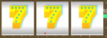 | Restore 100% HP |
| Two 7s + any symbol: restore 40% HP | |
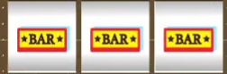 | Fast-bullet weapon |
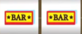 | Two BARs + any symbol: strength +4, permanently |
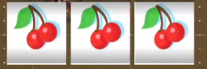 | 3-bullet (shotgun) weapon |
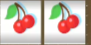 | Two cherries + any symbol: movement speed +5 for 10 seconds |
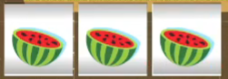 | High-damage weapon |
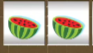 | Two watermelons + any symbol: a shield for 10 seconds; no HP lost |
A special weapon stays until the next spin. If that spin gives a buff instead of a matching weapon, the pistol comes back. Reel images are from the report's combination table, which spells the cherry "Jerry".
Screenshots
All from the 2021 project report.
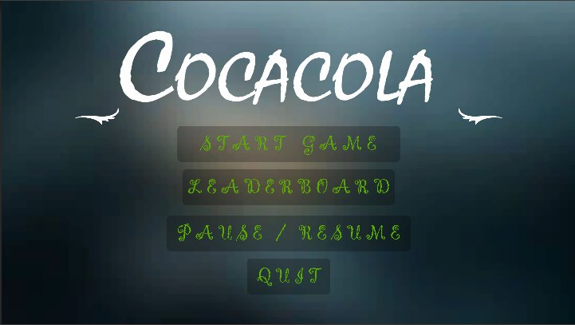
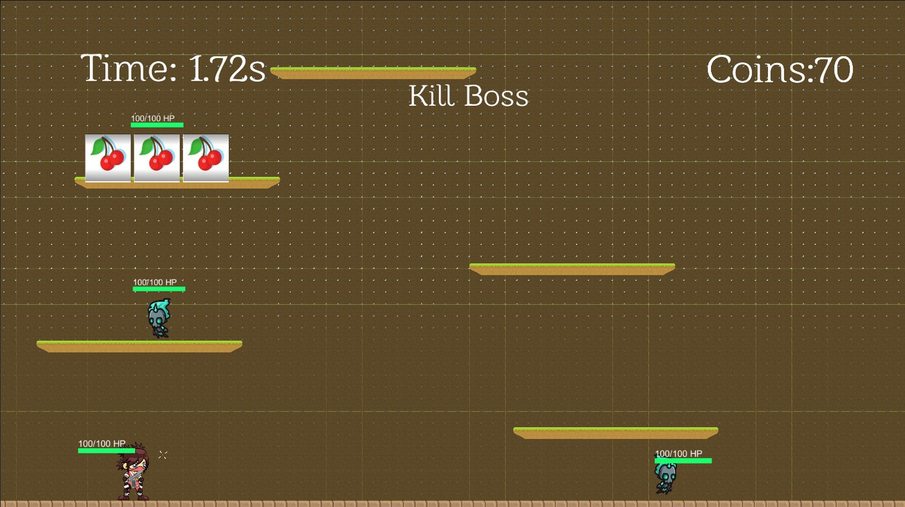
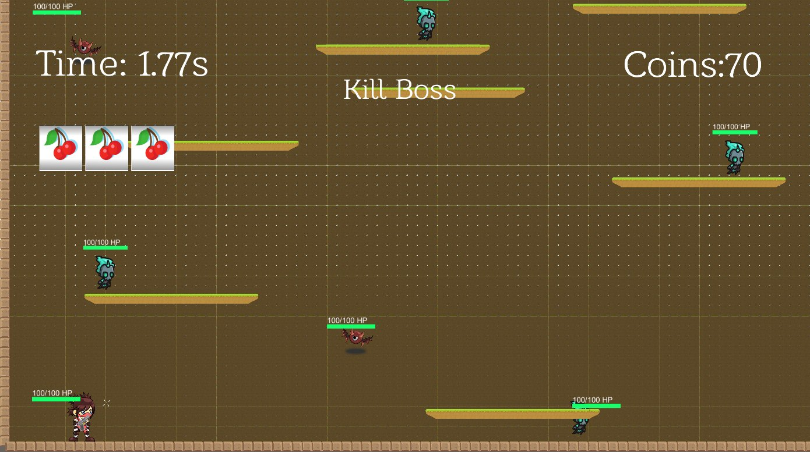
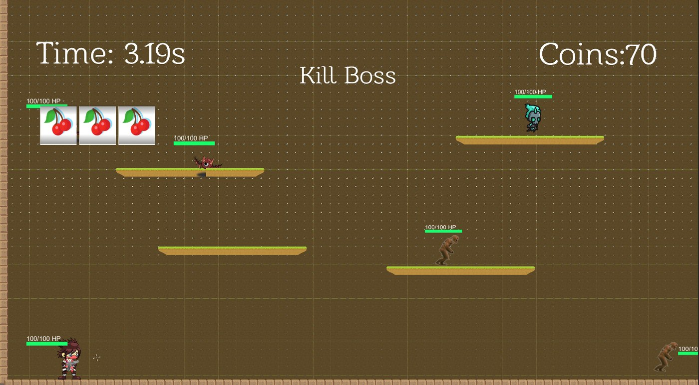
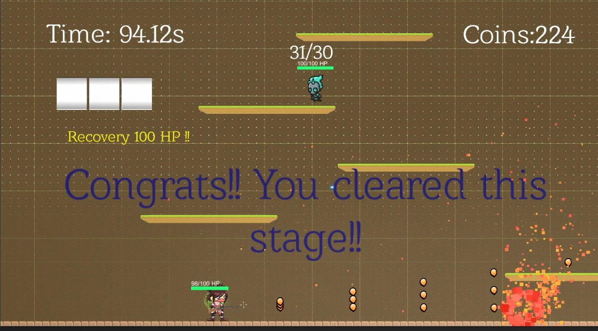
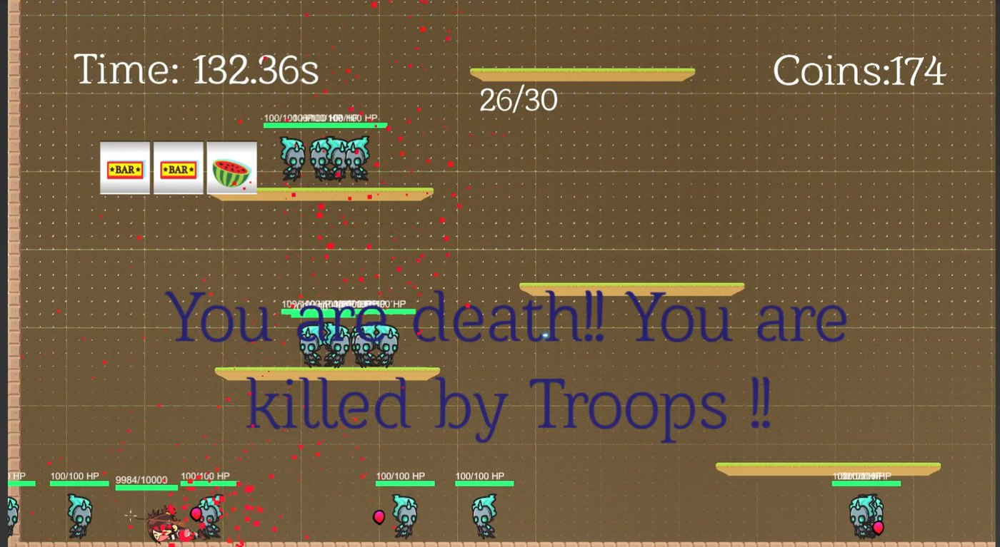
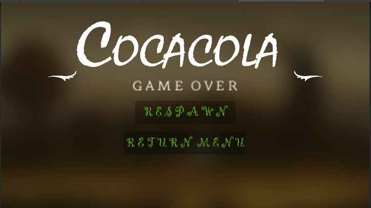
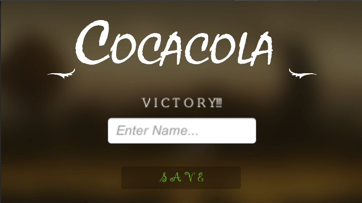
Scene flow

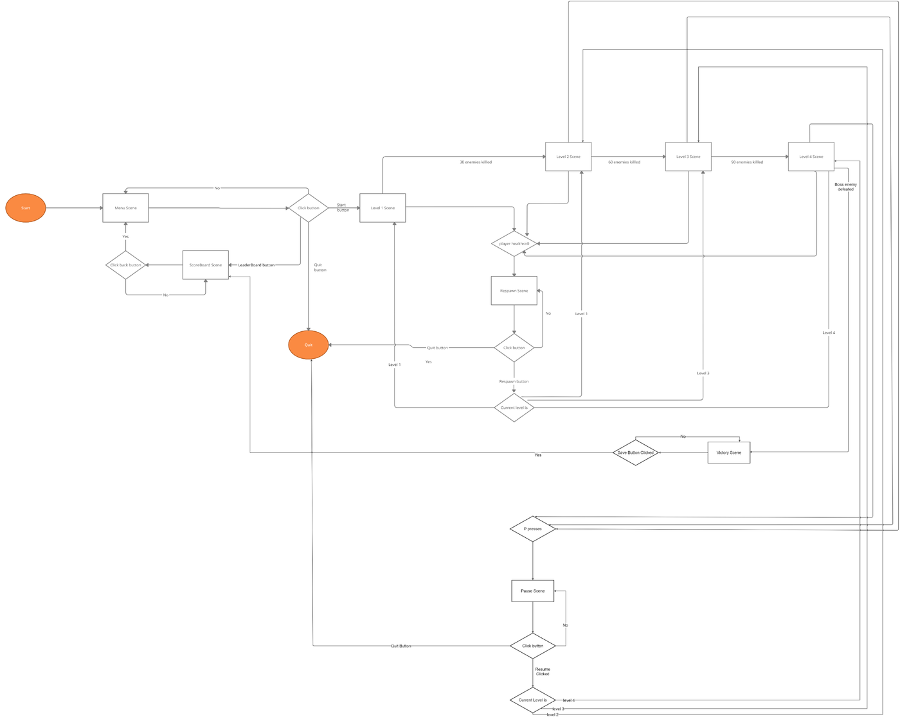